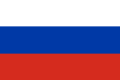
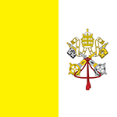
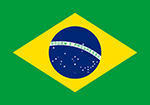
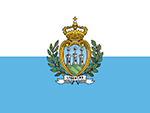
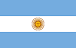
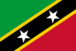

The world's largest and smallest countries(By land area) : Comparisons.
The Country Rankings: Top 10
About the Rankign System:
The area of each country is measured in square kilometers(km2). The table below displays the position of each country(1st, 2nd 3rd...), the country name and flag, the capital city of each country and the total land area. As established on the main page, most huge countries are not landlocked and most small countries comprise of small islands. The size comparisons below will show the relative sizes of each country if they were put on top of each other. The "What Time Is It?" Section will show you the time zone(s) of each of the twenty locations. *Disclaimer* country size comparisons may not be 100% accurate.
| World's Largest Countries | World's Smallest Countries | ||||||
| Rank | Country Name | Capital | Area(km2) | Rank | Country Name | Capital | Area(km2) |
| 1st | Russia  | Moscow | 17,098,242 km2 | 1st | Vatican City  | Vatican City | 0.44 km2 |
| 2nd | Canada | Ottawa | 9,984,670 km2 | 2nd | Monaco | No Capital | 1.95 km2 |
| 3rd | People's Republic of China | Beijing | 9,596,960 km2 | 3rd | Nauru | Yaren | 21 km2 |
| 4th | United States of America | Washington D.C. | 9,525,067 km2 | 4th | Tuvalu | Funafuti | 26 km2 |
| 5th | Brazil  | Brasília | 8,510,346 km2 | 5th | San Marino  | San Marino | 61 km2 |
| 6th | Australia | Canberra | 7,741,220 km2 | 6th | Liechtenstein | Vaduz | 160 km2 |
| 7th | India | New Delhi | 3,287,263 km2 | 7th | Marshall Islands | Majuro | 181 km2 |
| 8th | Argentina  | Buenos Aires | 2,780,400 km2 | 8th | Saint Kitts and Nevis  | Basseterre | 261 km2 |
| 9th | Kazakhstan | Astana | 2,724,910 km2 | 9th | Republic of Maldives | Malé | 298 km2 |
| 10th | Algeria | Algiers | 2,381,741 km2 | 10th | Malta | Valletta | 361 km2 |
More Country Comparisons(Interactive)
Compare Countries by size
Compare two countries to see what they would look like side by side(Without mercator projection). The smaller country will always be on top. The first country you select will be white. The second country will be black.
Compare an big country to a big country
Choose two countries...
Compare a small country to a small country
Choose two countries...